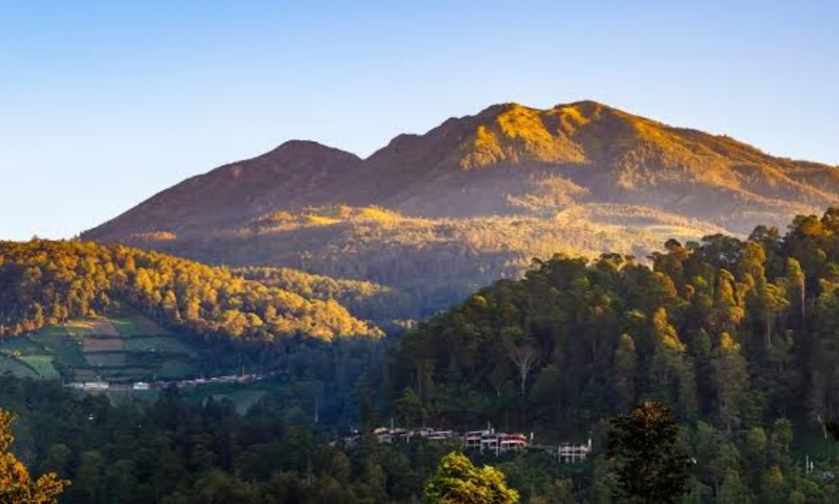

Detail Tempat Wisata
Gunung Lawu
 Gunung yang indah dan penuh dengan legenda ini terletak di Propinsi Jawa Timur, dengan ketinggian sekitar 3265 diatas permukaan laut.
Harga paket perjalanan wisata : Rp. 500.000 (3H2M)
Hawaii
Kepulauan hawaai merupakan pulau yang indah dengan pantai-pantai yang eksotis. Dengan tarian yang khas, dan keramah-tamahan penduduknya.
Harga paket perjalanan wisata : $500.000 (3H2M)
Colouseum

Sebagai situs keajaiban dunia, Colosseum menampilkan kemegahan arsitektur khas Roma Kuno. Raja Vespian mendirikan bangunan dari batu ini sebagai arena pertunjukan gladiator. Keistimewaan Colosseum tak hanya terlihat dari penampakannya saja. Konon, kesempurnaan desain bangunan membuat siapa pun yang bernyanyi tepat dari bagian tengah Colosseum dapat memperdengarkan suaranya ke seluruh sisi arena penonton, meski tanpa bantuan pengeras suara.
Harga paket perjalanan wisata : €12 (2H)
Borobudur

Borobudur adalah sebuah candi Buddha yang terletak di Borobudur, Magelang, Jawa Tengah, Indonesia. Candi ini terletak kurang lebih 100 km di sebelah barat daya Semarang, 86 km di sebelah barat Surakarta, dan 40 km di sebelah barat laut Yogyakarta.
Harga paket perjalanan wisata : Rp.471.000 (1H)